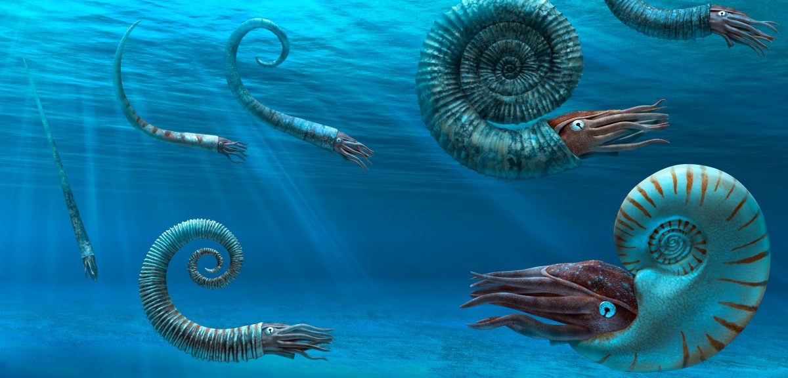

Ammonite
Cúc Đá kỷ Devon
Tổng quan
Kỷ
Devon
Họ
Ammonoidea
Chi
Ammonite
Đường kính
3 m
Thức ăn


Ammonite là một loài động vật thân mềm sống trong biển cổ đại khoảng từ 400 triệu đến 66 triệu năm trước. Chúng thuộc nhóm động vật thân mềm có vỏ sống, được cho là một trong những loài thân mềm tiến hóa cao nhất và là thành viên của lớp Cephalopoda, bao gồm cả mực và mực ống, có tổ tiên từ kỷ Silur nhưng đến kỷ Devon mới xuất hiện loài Cuc Đá thực thụ đầu tiên khoãng 400 triệu năm trước.
Nguồn: wikipedia.org
Phân bố
Tất cả khu vực đại dương trên Trái đất

Thông tin thêm về Ammonite
Kỷ nguyên và phân bố
Ammonite thực sự là thuật ngữ thông tục cho Ammonoids, một nhóm sinh vật lớn và đa dạng phát sinh trong kỷ Devon, bắt đầu khoảng 400 triệu năm trước. Chúng từng là một trong những loài động vật đa dạng và thành công nhất trên Trái đất.
Các nhà khoa học đã xác định được hơn 10.000 loài từ các hóa thạch được tìm thấy ở hầu hết mọi nơi trên hành tinh nơi từng tồn tại đại dương, từ Đại Bình nguyên ở Bắc Mỹ đến chân đồi của dãy Himalaya và sông băng ở Nam Cực. Giống như các mối quan hệ động vật thân mềm thời hiện đại của chúng, chúng chỉ sống ở đại dương. Chúng có xu hướng sống ở những vùng biển nông hơn và có thể có độ sâu tối đa khoảng 400 mét.
Tên khoa học
Tên gọi Ammonite bắt nguồn từ lớp vỏ ngoài cuộn xoắn trông hơi giống sừng cừu, thường được đội bởi một vị thần Ai Cập tên là Ammon. Ngoài ra chúng được gọi là Cúc Đá vì hoa văn trên vỏ của chúng.
Kích thước
Ammonite có nhiều kích cỡ, từ chỉ vài mm đến lớn hơn gấp nhiều lần, với kích thước lớn hơn phổ biến hơn từ cuối kỷ Jura trở đi. Loài Ammonite lớn nhất được biết đến là Parapuzosia Seppenradensis từ kỷ Phấn trắng muộn. Mẫu vật lớn nhất được tìm thấy có đường kính 1,8 mét nhưng cũng chưa hoàn thiện. Nếu hoàn chỉnh, đường kính toàn phần của ammonite này có thể từ 2,5-3,5 mét.
Ngoại hình
Khác với suy nghĩ rằng Ốc Anh Vũ chính là Cúc Đá còn sống, thực tế đây là hai loài khác nhau và sống trong khoảng thời gian khác nhau cùng với cấu tạo những chiếc xúc tu giống mực kéo dài từ lớp vỏ nhiều ngăn đặc biệt của chúng, cho thấy chúng là hai loài độc lập. Dựa trên hồ sơ hóa thạch, Ammonite có nhiều hình dạng khác nhau. Một số Ammonite có vỏ dài và thẳng, trong khi một số khác có vỏ hình xoắn ốc. Tuy nhiên, hầu hết các loài đều có lớp vỏ cuộn với các khoang lớn dần được ngăn cách bởi những bức tường mỏng gọi là vách ngăn.
Các loài động vật liên tục phát triển lớp vỏ mới khi chúng già đi, nhưng cơ thể của chúng luôn ở trong khoang bên ngoài. Các bức tường ngăn cách từng khoang giúp bảo vệ vỏ không bị dập nát. Chúng được nối với vỏ bằng những đường phức tạp được gọi là chỉ khâu — độ phức tạp của chúng thay đổi rất nhiều trong suốt quá trình tiến hóa của loài động vật này. Ngoài ra còn có một số hình dạng khác thường hơn - loài Nipponites mirabilis , được tìm thấy ở Nhật Bản, đặc biệt hiếm và trông hơi giống một nút thắt.
Chế độ ăn và săn mồi
Mặc dù phần lớn phụ thuộc vào kích thước của chúng, nhưng Ammonite có thể đã ăn những thứ tương tự như động vật chân đầu ngày nay, chẳng hạn như động vật giáp xác, các loại sò và cá. Các loài nhỏ hơn có lẽ đã ăn sinh vật phù du. Một số loài khác có thể là loài ăn xác thối.
Các nhà khoa học tin rằng Ammonite, giống như động vật chân đầu hiện đại, có mô cơ thể mềm với các xúc tu gắn trên đầu để bắt mồi. Bằng chứng hóa thạch cho thấy chúng có bộ hàm sắc nhọn giống như mỏ để bẫy con mồi như sinh vật phù du, động vật giáp xác và các loại Ammonite khác.
Khám phá
Ngày nay, vỏ Ammonite được sử dụng làm mốc đo chỉ số hóa thạch, nghĩa là chúng có thể giúp xác định niên đại của các hóa thạch khác được tìm thấy trong cùng một lớp đá biển. Những loài động vật chân đầu này tạo ra những chỉ số hóa thạch lý tưởng vì chúng phong phú, phổ biến và các loài khác nhau của chúng sống trong những khoảng thời gian riêng biệt có thể dễ dàng xác định bằng các mẫu đường khâu của chúng. Hóa thạch Ammonite cũng tiết lộ thông tin về khí hậu cổ đại, vì các địa điểm khai quật chúng phải từng được bao phủ bởi các vùng biển cổ đại.
Sự tuyệt chủng
Trong lịch sử lâu dài của chúng, Ammonite đã sống sót qua ba cuộc tuyệt chủng hàng loạt — đáng chú ý nhất là cuộc tuyệt chủng kỷ Permi, sự nóng lên toàn cầu do hoạt động núi lửa gây ra cách đây khoảng 252 triệu năm và đã giết chết 96% các loài sinh vật biển trên hành tinh. Trong khi nhiều loài Ammonite đã chết trong sự kiện tuyệt chủng đó, các nhà khoa học tin rằng những loài sống sót đã đa dạng hóa bùng nổ trong hàng triệu năm sau đó. Ammonites săn lùng các vùng biển của hành tinh cho đến khi chúng bị xóa sổ hoàn toàn bởi một tiểu hành tinh rộng 7,5 dặm đâm vào Trái đất và gây ra một trận đại hồng thủy đã cướp đi sinh mạng của hơn 3/4 số loài trên hành tinh khoảng 66 triệu năm trước. Một số nhà khoa học đưa ra giả thuyết rằng Ammonites không thể sống sót sau hậu quả do nguồn thức ăn chính của chúng đột ngột suy giảm: sinh vật phù du biển.